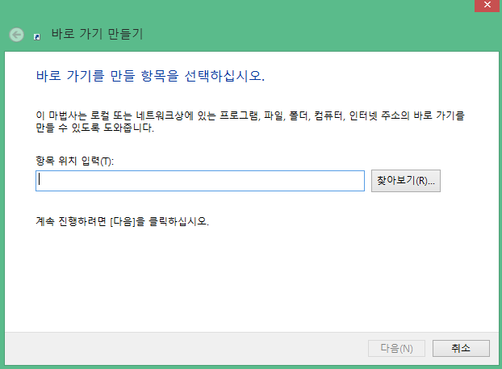

위에 보이는 두 개의 바로가기 파일은 로고와 이름은
같지만 사실은 다른 바로가기 파일이다.
구글사의 크롬(왼쪽)
바이러스가 담긴 악성코드(오른쪽)
이것을 이용하여 크롬인줄 알고 눌렀지만 악성코드가 실행되는
상황을 직접 만들수 있다.
만드는법을 알려주겠다.
우선 내가 직접 만든 악성코드 USB가 필요하다.
혹은 직접 배치파일 악성코드를 만들어라.
위에 보이는 것처럼 배치파일을 우클릭 하고
'잘라내기' 옵션을 선택하여 바탕화면 혹은 바탕화면에
새 폴더를 만들어서 붙여넣는다.

자 이렇게 성공적으로 새 폴더 안에 배치파일을 넣었다.
자 그다음 바탕화면에 바로가기를 만들어야된다.
우클릭 후 '새로 만들기' -> '바로가기' 옵션을 선택한다.

자 그러면 다음과 같은 창이 뜨게된다 /*^^/*
여기서 '항목 위치 입력' 칸에 방금 새 폴더에 저장했던
배치파일의 위치를 복사 붙여넣기 하면 된다.
(TMI : '찾아보기' 버튼을 눌러 파일의 위치를 찾으면 편리하다.)
자 이런식으로 경로를 찾아서 넣어준다.
자 그다음 이 바로가기의 이름을 선택한다.
난 Chrome 아이콘을 덮어씌워야 하기에 이름을 Chrome으로 하겠다.
그러면 이렇게 바탕화면에 악성코드 바로가기 파일이 완성되었다.
이제 정말 Chrome 아이콘을 가져와서 이 악성코드에 적용해보자!
우선 이 진짜 Chrome을 우클릭 하여 '속성' 옵션에 들어간다.
그다음 중간 약간 아래에 위치하는 '아이콘 변경' 옵션에 들어간다.

음. 그다음 여기 파란색으로 표시되는 글씨를 전부 복사하고 나온다.
그다음 여기 이 악성코드 바로가기 파일도 우클릭하여 '속성' 옵션에 들어간다.
다음은 마찬가지로 '아이콘 변경' 옵션에 들어간다.
마찬가지로 이런 창이 뜰텐데 이번엔 저기 파란색으로 표시된 글씨를 복사해놓은 글씨로 바꿔준뒤
'확인' 버튼을 눌러준다.
그리고 '적용' 버튼을 눌러준다.
자 이제 진짜 Chrome을 지워준 뒤 악성코드 Chrome 이름 뒤에 .bat 를 지워준다.
휴 끝났다;; 이제서야 비로소 크롬의 탈을 쓴 악성코드를 하나 만들어낸 것이다.
이제 이 사용법을 익혀 직접 응용해보자.
-MMUSB-